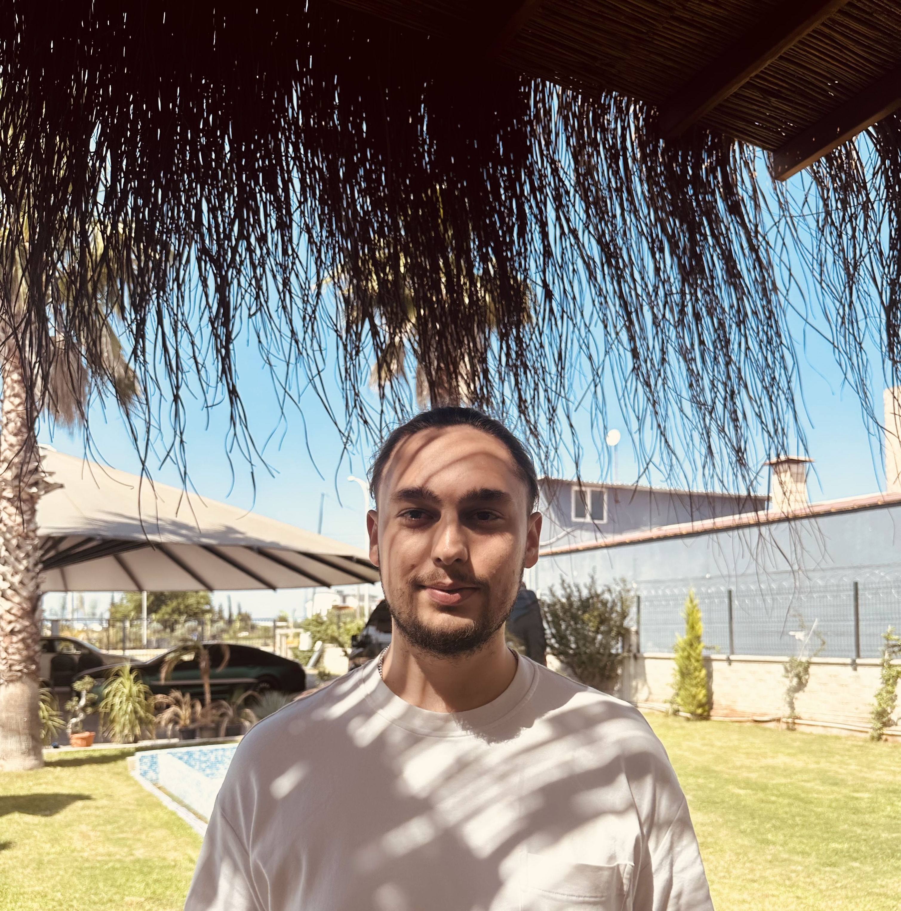

|
Onur Dogan
I am a MSc Computer Science & Engineering Student at Sabancı University.
Prior to start pursuing MSc, I was member of Computational Biology Group and lucky to be supervised by Prof. Hilal Kazan.
During my undergraduate study, I was happy to work with Asst.Prof. Oznur Tastan on TLMSA project as research intern and Assoc.Prof. Sevgi Sengul Ayan on multidiscipliner projects.
Apart from my research positions, I had an amazing chance to work with Can Kavaklioglu as Junior ML Engineer in GrainFox. I also worked in John Snow Labs as Junior Data Scientist and in Turkish Aerospace Industries as Software Engineer Intern.
/
CV /
/
|

|
|
Publications and Conference Presentations
|
SciTuna: Single Cell RNA-seq data integration tool using network alignment
Onur Dogan,
Burak Onur Erten,
Cesim Erten,
Aissa Houdjedj,
Hilal Kazan,
Yacine Marouf,
Mekan Myradov,
Oznur Tastan.
Under Review
|
Sex-biased Expression of Neuroimmune Guidance Cues in Cardiovascular Diseases
Yacine Marouf, Onur Dogan, Ernest Diez Benavente, Gerard Pasterkamp, Hester M. den Ruijter, Janine van Gils, Katey Rayner, Hilal Kazan
Conference Presentation: Presented at (ERA-CVD’22, Latvia, Sept 19-20, 2022) & (HIBIT’22, Turkey, Oct 20-21, 2022)
|
Harmony in Diversity: Exploring Eclectic Chair Designs Through Deep Neural Networks Analysis in Interior Design Education
Mehmet Uğur KAHRAMAN*, Süleyman Onur DOGAN*, Sevgi ŞENGÜL AYAN, Yaren ŞEKERCİ, Ferhat KOYUNCU, Hakan Bal
Under Review
|
|
{kind=link}